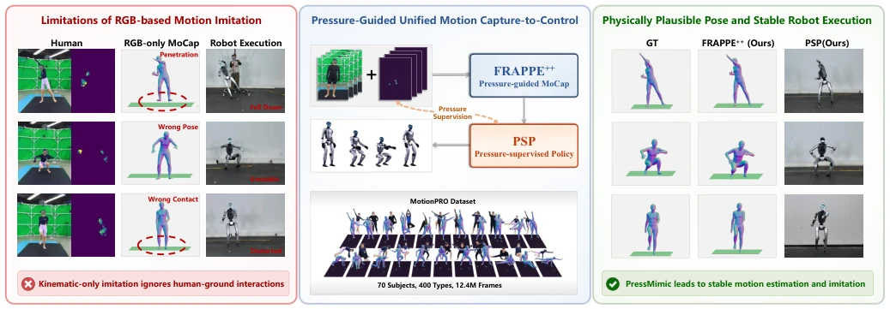
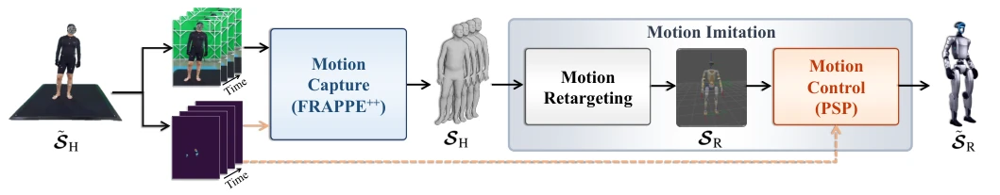
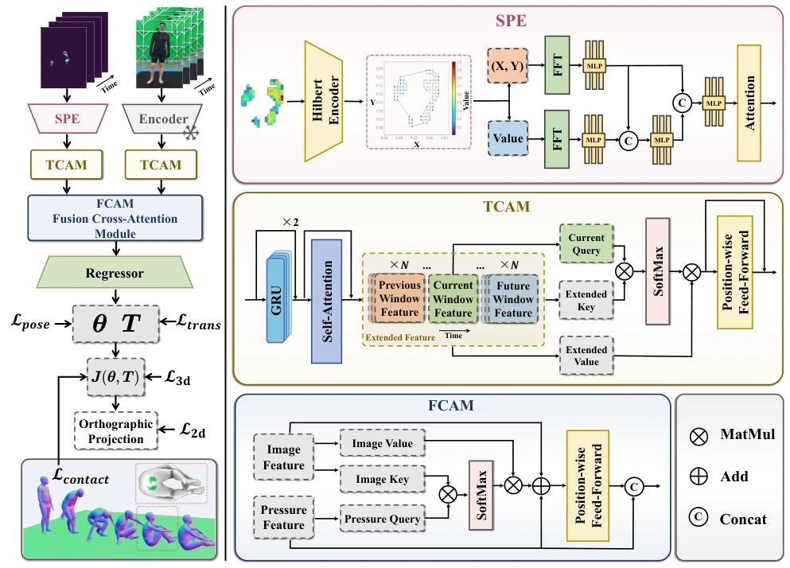
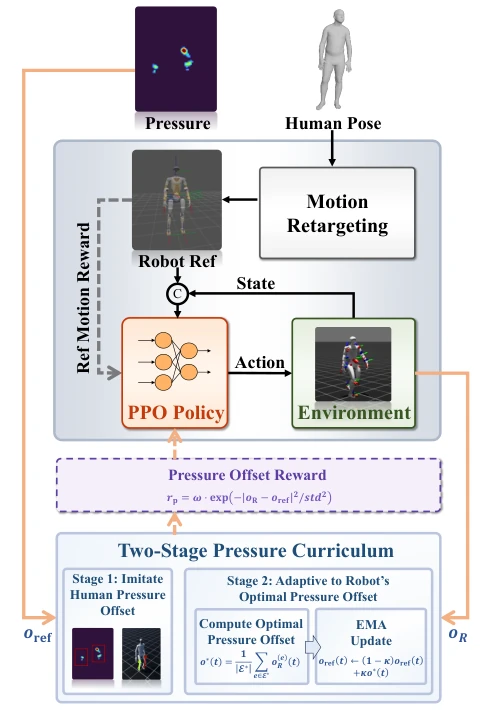
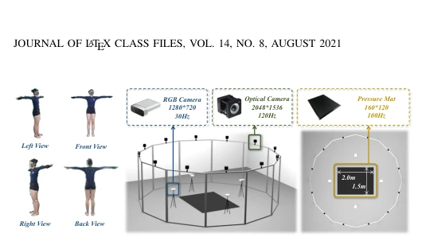
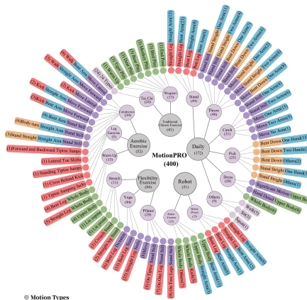
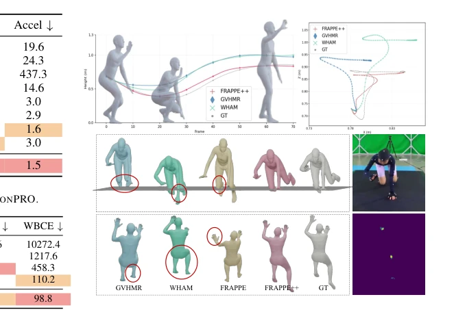
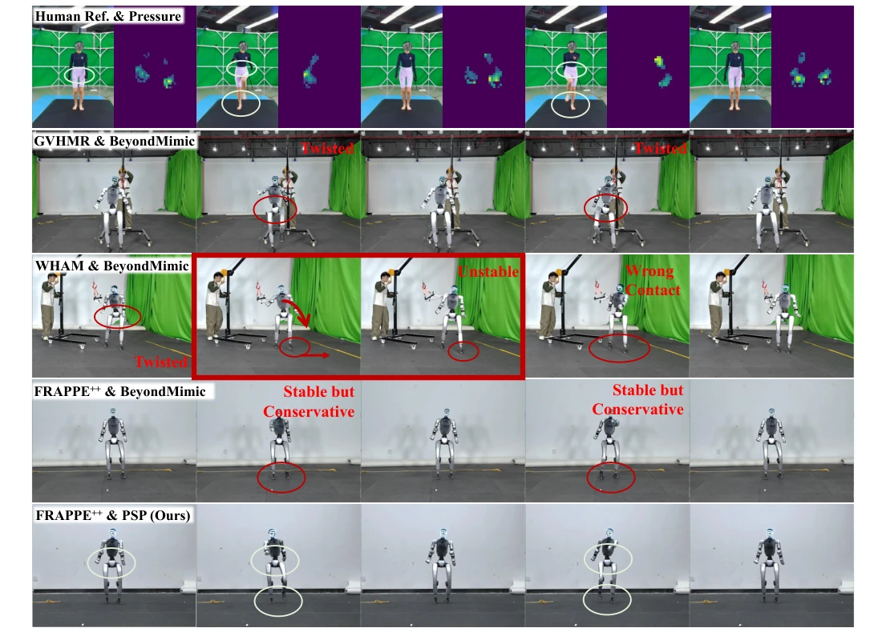

This paper equips the robot's "footfall" with a pressure sensor, effectively filling a gap in visual MoCap. FRAPPE++ utilizes pressure maps to assist RGB-based pose estimation, while PSP employs pressure as an RL reward, presenting a clear logic. However, honestly, deploying pressure mats is not cheaper than motion capture, and the paper does not elaborate on how to resolve the temporal alignment between pressure and visual signals, merely stating resampled to 30Hz. Nevertheless, the experimental data is indeed robust, significantly more stable than pure visual methods; at least the robot no longer clips through the floor. For embodied AI pursuing physical consistency, this is a commendable attempt, but the "pressure omnipotence" argument may be somewhat exaggerated, as pressure signals are not distinct for certain actions. Furthermore, although real-world transfer was successful, it relies on high-quality reference data; if the reference data itself contains noise, pressure supervision might amplify errors. Overall, this is a solid work establishing a physical bridge between perception and control; while it has not solved all deployment challenges, it points the direction.
Existing humanoid robot imitation learning primarily relies on vision, neglecting physical interactions between humans and the environment. Literature [1]-[10] indicates that pure visual MoCap suffers from depth ambiguity and occlusion issues, resulting in artifacts such as foot sliding and floor penetration. Literature [11]-[13] notes that control strategies based solely on kinematic references, lacking dynamic constraints, are prone to instability. Kinematic-only imitation ignores human-ground interactions (Fig 1). Pressure signals can directly encode foot-ground interaction and contact dynamics, which are difficult for vision to capture. Existing pressure methods mostly focus on slow actions or only foot contact [59]-[65], lacking full-body modeling. This paper aims to bridge perception and control through pressure signals, achieve physically consistent imitation, and solve foot sliding and floor penetration problems. This is not merely a perception upgrade but also physical grounding at the control level.

Fig. 1. We propose PressMimic, a unified framework that integrates pressure into both motion capture and motion control for humanoid motion imitation. By fusing RGB with pressure signals in the motion capture module FRAPPE++ and supervising robot training via the pressure-guided policy PSP, PressMimic achieves physically grounded pose estimation and stable robot execution.
The framework is divided into two stages: perception and control. At the perception end, FRAPPE++ fuses RGB and pressure maps. First, the Sparse Pressure Encoder (SPE) converts sparse pressure maps into 1D sequences, preserving topological structure. Next, the Temporal Context Aggregation Module (TCAM) models long-term temporal dependencies via cross-window attention. The Fusion Cross-Attention Module (FCAM) uses pressure features as Query to retrieve visual features, achieving cross-modal fusion and outputting SMPL parameters. At the control end, PSP is based on the PPO algorithm, introducing pressure offset (bilateral weight distribution) as an auxiliary reward. The pressure offset o is defined to distinguish single-foot/double-foot/airborne states. A two-stage curriculum learning approach is adopted: first imitating human pressure distribution, then adaptively optimizing the robot's optimal contact distribution, updating reference values via EMA to ensure physical consistency. This method cleverly transfers contact constraints from perception to control, avoiding the issue of disconnection between reference and control in traditional methods.

Fig. 2. Overview of PressMimic. Given synchronized RGB video and pressure sequences, PressMimic estimates human body motion, retargets it to the humanoid robot, and executes it via a learned control policy. Pressure signals enhance motion estimation accuracy and provide auxiliary contact supervision for the control policy, as indicated by the orange dashed arrow.

Fig. 3. The framework of FRAPPE++. Pressure and RGB video are processed by the SPE and image encoder respectively, followed by TCAM to model spatiotemporal dependencies within each modality. FCAM then fuses the two modalities via cross-attention, where image features serve as key and value while pressure features serve as query. The fused representation is fed into a regressor to estimate SMPL parameters.

Fig. 4. Humanoid motion imitation under pressure-supervised policy (PSP). Human pose and plantar pressure serve as dual inputs: the pose is retargeted to robot reference motion and concatenated with the current state as policy input, while pressure drives a two-stage curriculum that first imitates the human pressure offset and then adapts to the robot’s own optimal contact distribution via EMA updates.
Constructed the MotionPRO dataset, comprising 70 people, 400 action classes, and 12.4M frames. Comparison baselines include WHAM, GVHMR, BeyondMimic, etc. Metrics cover pose error (MPJPE), trajectory error (RTE), success rate (SR), etc. Results show FRAPPE++ outperforms pure visual methods in pose estimation, with significantly reduced trajectory error. In control experiments, PSP improved SR and MC compared to BeyondMimic, and achieved higher Foot Contact Accuracy (FCA). Real-world validation on Unitree G1 showed FRAPPE++ combined with PSP achieved stable and natural gaits. However, it was found that Optical MoCap and pressure signals have slight misalignment, causing fluctuations in some metrics. This indicates that multimodal alignment remains a challenge, but the overall performance improvement is significant, proving the effectiveness of pressure signals.

Fig. 5. The architecture of our motion capture system for dataset collection.

Fig. 6. Hierarchal distribution of 400 motion types.

Fig. 7. Qualitative comparison with methods for human pose estimation.

Fig. 8. Real-world humanoid motion imitation results. Rows show execution results under different reference sources and control policies. Low-quality references (GVHMR, WHAM) lead to twisted postures and instability, while FRAPPE++ with BeyondMimic achieves stable but conservative foot placement. FRAPPE++ with PSP (Ours) produces stable execution with more natural foot contact dynamics (white circles), validating sim-to-real transfer of pressure supervision.